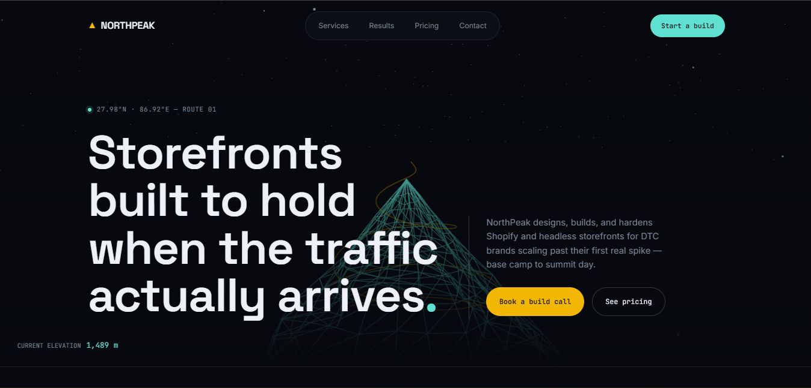

Project Overview
NorthPeak Digital is a responsive one-page website for a fictional e-commerce development agency, created for the Digital Heroes Web Development Internship Task.
The website combines an interactive Three.js mountain visualization with service offerings, pricing plans, and interactive interface elements to create a consistent digital agency experience.
Application Preview

Key Features
- Responsive one-page agency website.
- Interactive Three.js hero animation featuring a low-poly mountain and animated climbing path.
- Six-service grid layout.
- Three pricing tiers: Basecamp, Ascent, and Summit.
- Client-side contact form validation.
- Responsive navigation menu.
Design Decisions
The fictional agency uses a mountain-inspired visual identity. Its pricing plans follow a Basecamp, Ascent, and Summit progression to maintain the theme throughout the website.
A dark navy background with teal and gold accents creates the visual palette. The mountain visualization adds an interactive element without distracting from the main content.
The services are presented without numerical ordering because they do not represent sequential steps.
Accessibility
- Semantic HTML landmarks for page structure.
- Skip-to-content navigation link.
- Visible keyboard focus states using :focus-visible.
- Form fields with associated labels and accessible error messages.
- Decorative Three.js canvas marked as hidden from assistive technology.
- Reduced-motion preferences respected by the animation.
- Text and interactive element contrast checked against the dark background.
Performance Optimization
Performance considerations were incorporated into the implementation to reduce unnecessary rendering work and external dependencies.
- Three.js generates the hero visual without external image assets.
- Limited font families and weights, with font-display: swap.
- Renderer pixel ratio capped at 2.
- Animation pauses when the browser tab is hidden.
- Reduced-motion preferences are respected.
- Low-polygon geometry keeps the 3D scene relatively lightweight.
- A single CSS file and JavaScript file keep the implementation simple.
My Contribution & AI Disclosure
Claude was used to generate the initial version of the website, including its layout, content, and Three.js hero animation.
My work focused on reviewing the generated code, refining the styling and content, testing responsiveness across different screen sizes, improving accessibility, verifying Lighthouse scores, and making changes to better satisfy the assignment requirements.
AI accelerated the initial development, while I focused on understanding, reviewing, testing, and refining the final implementation before submission.
Lighthouse Results
The deployed website was tested using Chrome DevTools Lighthouse. The repository reports the following scores:
- Performance: 99 / 100
- Accessibility: 96 / 100
- Best Practices: 96 / 100
- SEO: 100 / 100
These are the results documented in the project README.